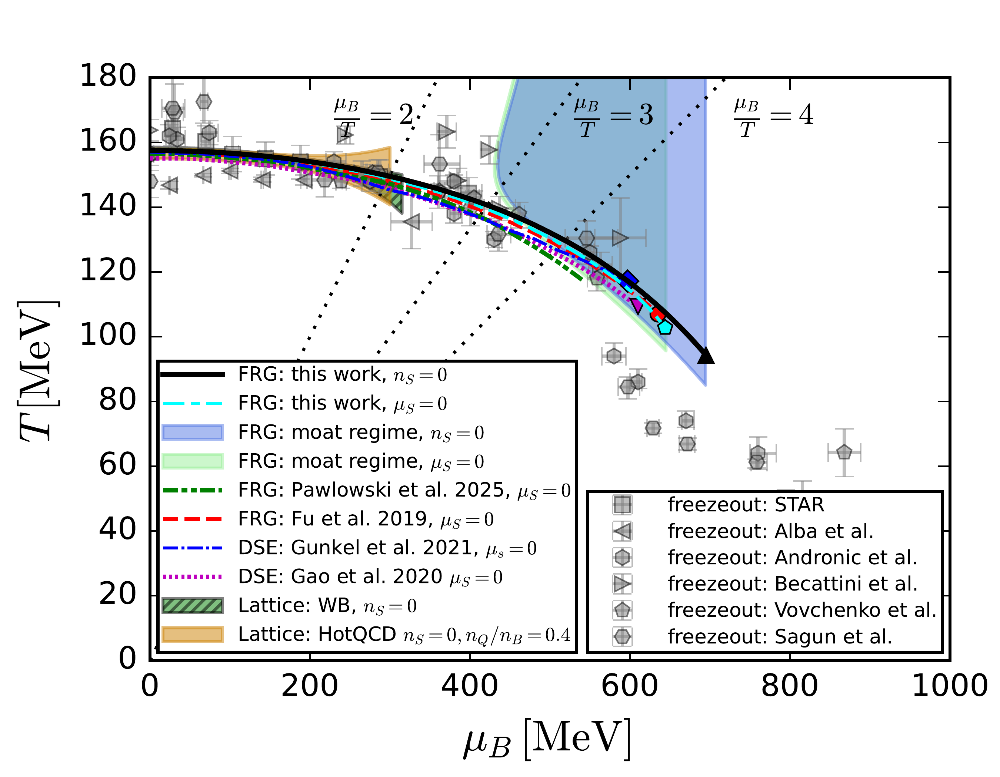
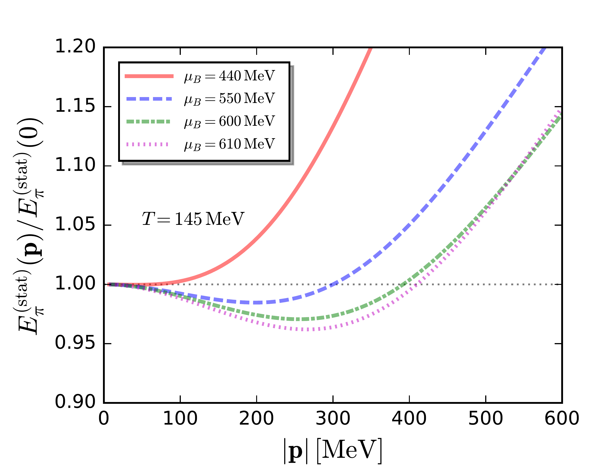
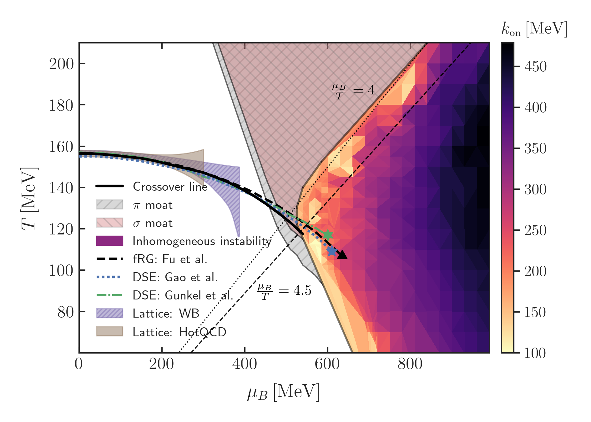
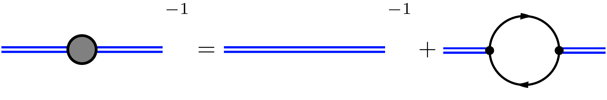
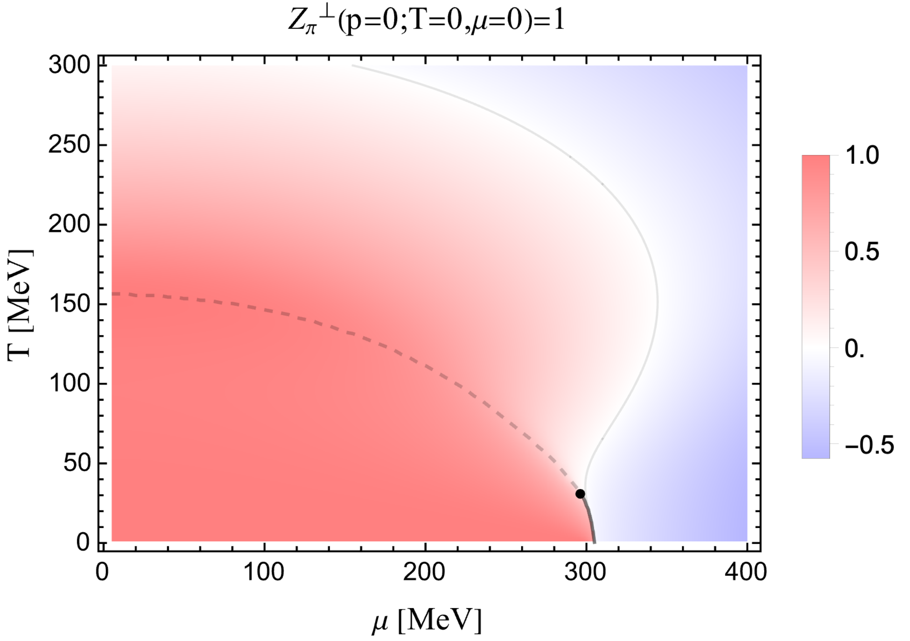
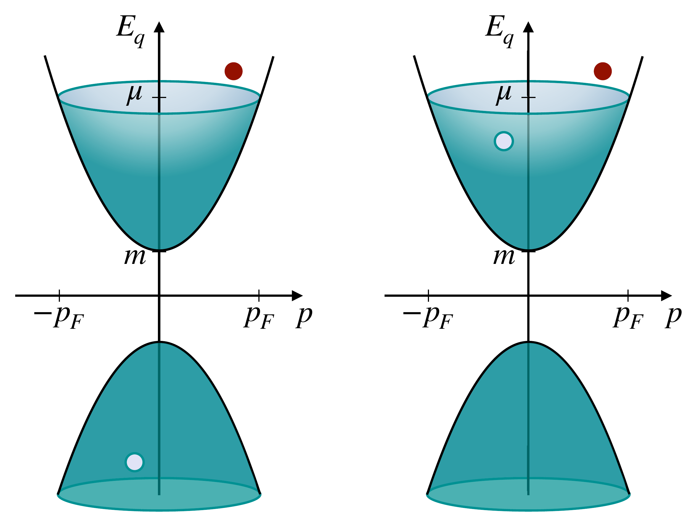
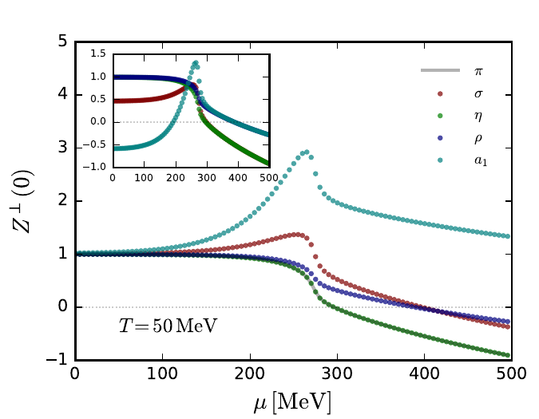
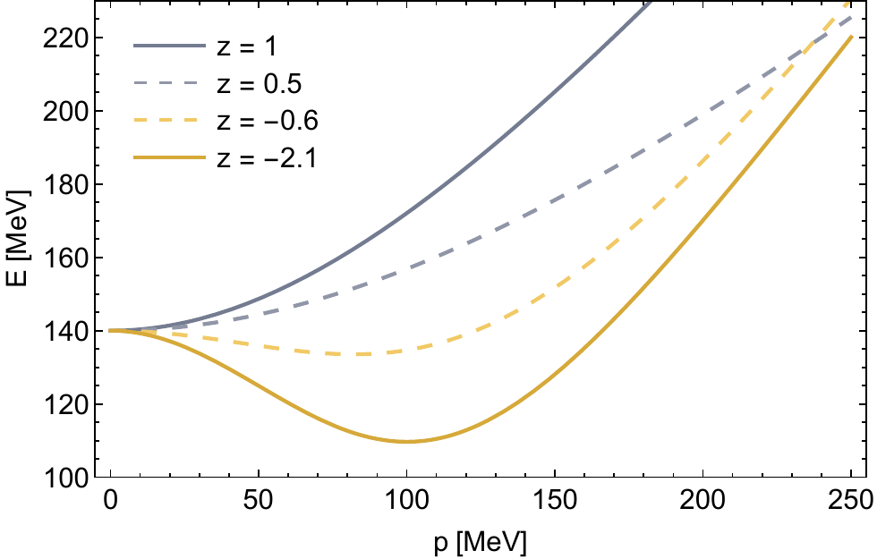
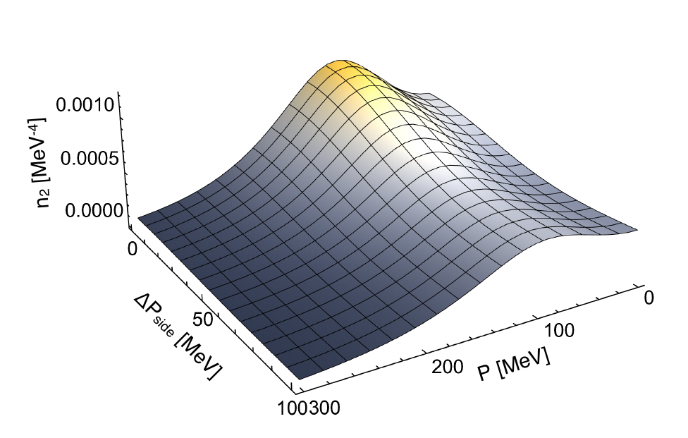

Dissecting the moat regime at low energies
Shi Yin
CPOD 2026, CERN
Based on:
1. Fabian Rennecke and SY, arXiv:2510.06712
2. Fabian Rennecke and SY, in preparation
3. Wei-jie Fu, Jan M. Pawlowski, Robert D. Pisarski, Fabian Rennecke, Rui Wen and SY, Phys.Rev.D 111 (2025) 9, 094026
2. Fabian Rennecke and SY, in preparation
3. Wei-jie Fu, Jan M. Pawlowski, Robert D. Pisarski, Fabian Rennecke, Rui Wen and SY, Phys.Rev.D 111 (2025) 9, 094026
Outline
- Moat regime on the QCD phase diagram
- Mechanism of the moat regime
- Connection to experimental observables
- Summary and Outlook
Moat regime on QCD phase diagram
Zero-momentum approximation

arXiv: 2603.13455
Static dispersion relation
\[ E_\pi(\bold{p}) = \sqrt{Z^{\perp}_\pi\,\bold{p}^2 + m_{\pi}^2} \]

Moat regime on QCD phase diagram
Full-momentum dependent correlation functions

Moat
Inhomogeneous
See Franz's talk, tomorrow 15:00
Outline
- Moat regime on the QCD phase diagram
- Mechanism of the moat regime
- Connection to experimental observables
- Summary and Outlook
Mechanism of the moat regime
Quark-Meson model
\[
\begin{aligned}
\mathcal{L}[\phi,q,\bar{q}]&=\bar{q}\big[\gamma_\mu\partial_\mu-\gamma_0 \hat{\mu}\big]q+\frac{1}{2}\,(\partial_\mu\phi)^2\\[2ex]
&\quad+h\,\bar{q}(T^0\sigma+i\gamma_5\mathbf{T}\cdot\boldsymbol{\pi})q+U(\rho)-c\sigma\\[2ex]
&\quad+ \mathcal{L}_{\rm ct}\,.
\end{aligned}
\]
\[
\begin{aligned}
\Sigma_\pi(p^2;T,\mu)=p^2+m^2_\pi+\Pi^\pi_{\mathrm{RPA}}(p^2;T,\mu)
\end{aligned}
\]
\[
\begin{aligned}
Z^\perp_\pi(T,\mu)=\frac{\partial \Sigma_\pi(p^2;T,\mu)}{\partial \bold{p}^2}\bigg|_{p_0=0,\bold{p}=0}
\end{aligned}
\]

Moat regime in QM model

Mechanism of the moat regime
Self-energy
Particle Creation and Annihilation (C.A.)
\[
\begin{aligned}
\frac{-1+n_F(E_q(q);T,\pm\mu)+n_F(E_q(q-p);T,\mp\mu)}{E_q(q)+E_q(q-p)}
\end{aligned}
\]
Particle-Hole fluctuation (P.H.)
\[
\begin{aligned}
\frac{n_F(E_q(q);T,\pm\mu)-n_F(E_q(q-p);T,\pm\mu)}{E_q(q)-E_q(q-p)}
\end{aligned}
\]
Dirac cone

C.A.
P.H.
C.A.
P.H.
Screening effect!
Moat regime of other mesons
Quark-Meson interaction of heavier mesons
\[
\begin{aligned}
&\sigma \sim h_\sigma\,\bar{q}\,T^0\,\sigma\, q\\[2ex]
&\eta \sim h_\eta\,\bar{q}\,T^0\,i\gamma_5 \eta\, q\\[2ex]
&\rho \sim h_\rho\,\bar{q}\,\bold{T}\,\gamma_\mu\rho^\mu\, q\\[2ex]
&a_1 \sim h_{a_1}\,\bar{q}\,\bold{T}\,i\gamma_\mu\gamma_5\,a_1^\mu\, q
\end{aligned}
\]

Outline
- Moat regime on the QCD phase diagram
- Mechanism of the moat regime
- Connection to experimental observables
- Summary and Outlook
Possible Observables
HBT interferometry
Peak


\[
\rho_\pi(\omega,\bold{p}) \sim \delta(\omega-E_{\mathrm{moat}})
\]
Time-like behavior of the spectral function
Spectral function of Pion


Outline
- Moat regime on the QCD phase diagram
- Mechanism of the moat regime
- Connection to experimental observables
- Summary and Outlook